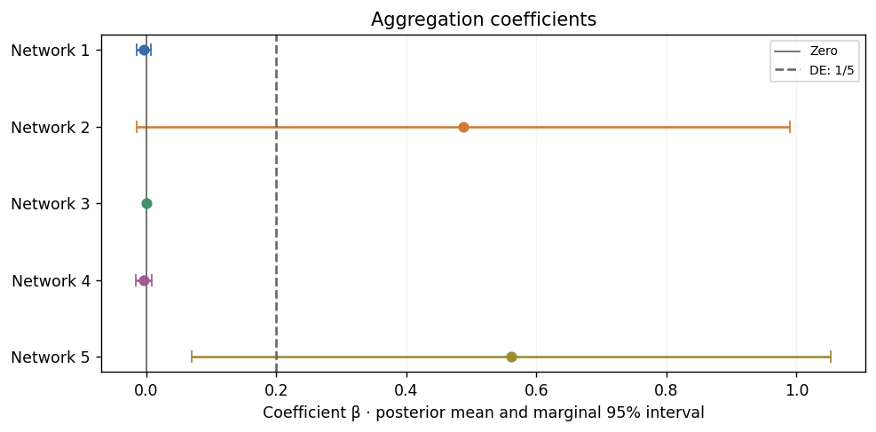
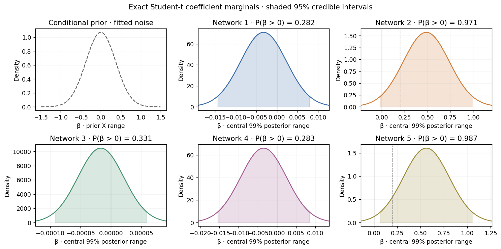
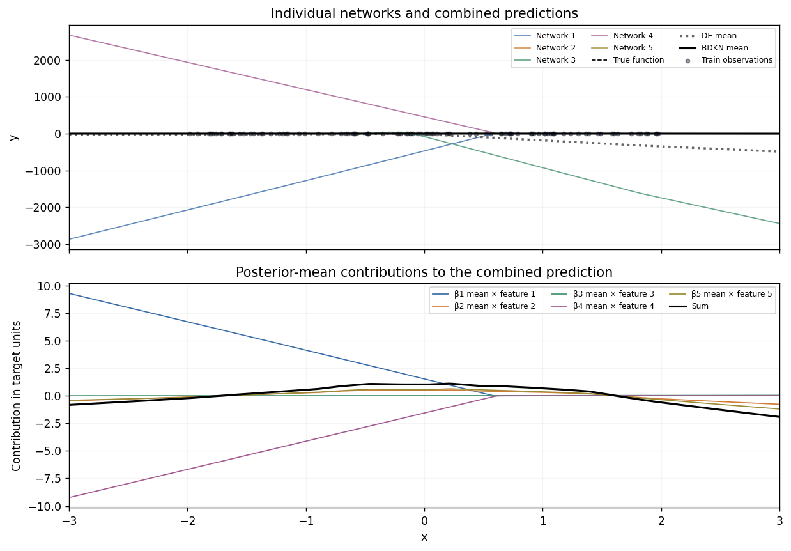
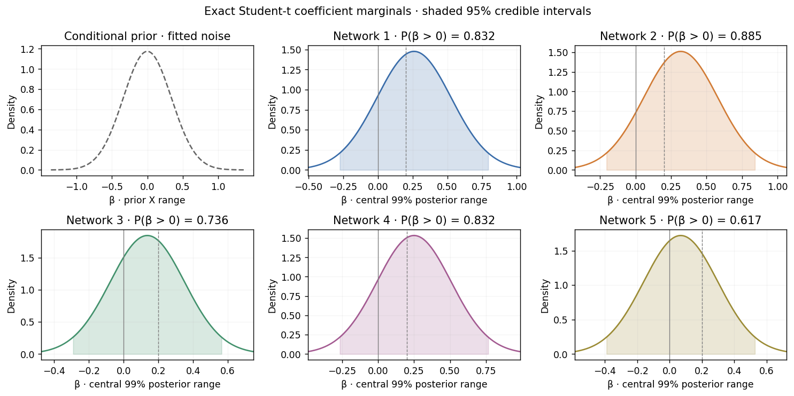
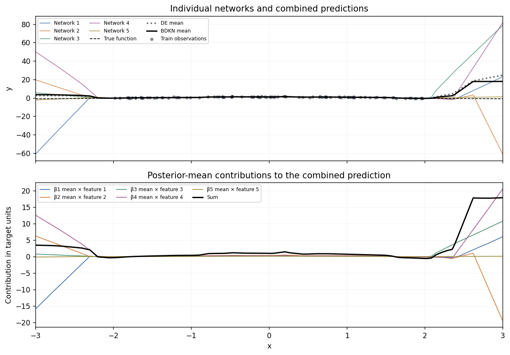
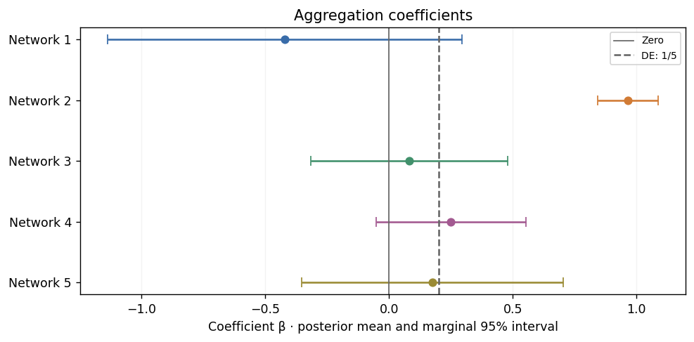
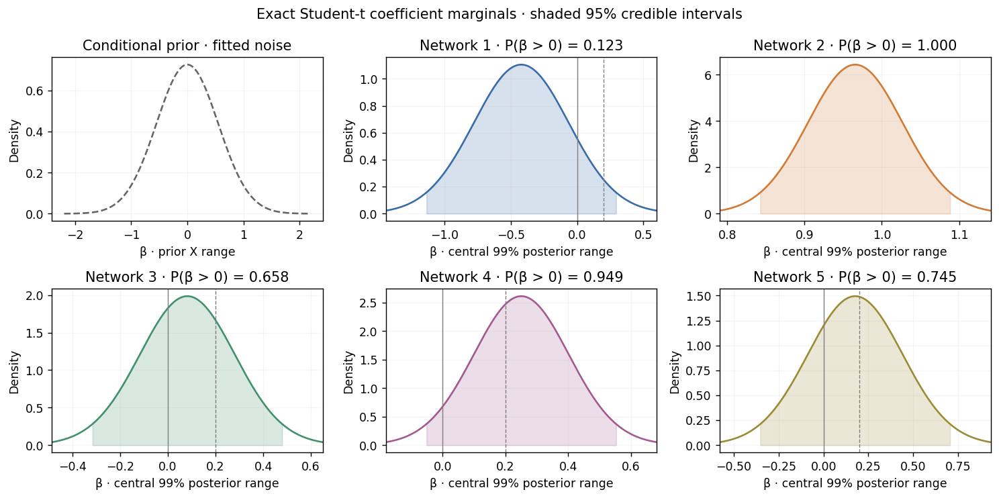
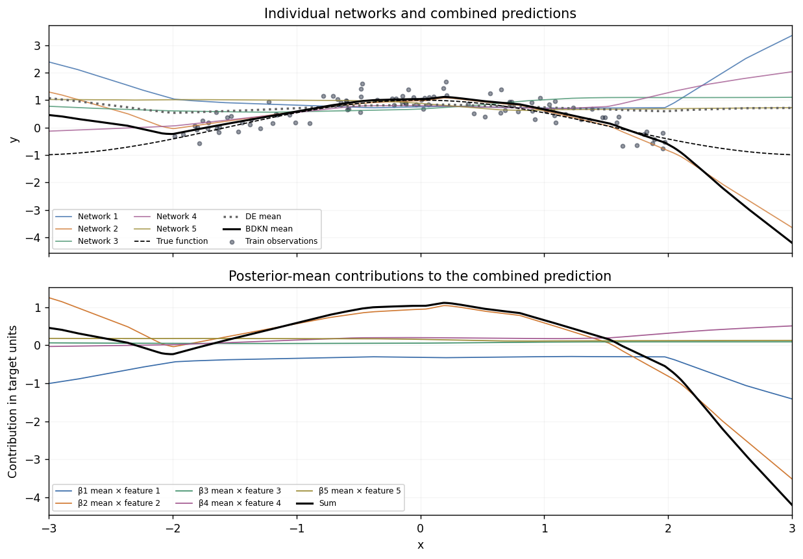

Regression comparison
Download resultsAggregation weights
Coefficients can be negative and need not sum to one. Intervals describe coefficient uncertainty; the dashed reference is DE’s fixed 1/H weight.
BDKN


Each density panel uses its own X range for readability; coefficient intervals above share a common axis. Prior reference conditions on fitted noise. Contribution shares use held-out inputs; test targets are used only for scoring.
| Network | β mean | 95% low | 95% high | P(β > 0) | Contribution share | Test RMSE | Test NLL |
|---|---|---|---|---|---|---|---|
| 1 | 0.29299 | -0.30370 | 0.88968 | 0.83384 | 0.29080 | 0.40601 | 2.19498 |
| 2 | 0.32588 | -0.25627 | 0.90802 | 0.86530 | 0.30631 | 0.35829 | 0.97832 |
| 3 | 0.09065 | -0.39933 | 0.58062 | 0.64282 | 0.08804 | 0.33808 | 1.01757 |
| 4 | 0.27580 | -0.29841 | 0.85002 | 0.82854 | 0.26186 | 0.32456 | 1.46765 |
| 5 | 0.05188 | -0.50796 | 0.61171 | 0.57274 | 0.05300 | 0.38945 | 2.51700 |
Functional repulsion · BDKN



Each density panel uses its own X range for readability; coefficient intervals above share a common axis. Prior reference conditions on fitted noise. Contribution shares use held-out inputs; test targets are used only for scoring.
| Network | β mean | 95% low | 95% high | P(β > 0) | Contribution share | Test RMSE | Test NLL |
|---|---|---|---|---|---|---|---|
| 1 | -0.00324 | -0.01437 | 0.00789 | 0.28238 | 0.43952 | 1245.15572 | 9.98418 |
| 2 | 0.48747 | -0.01517 | 0.99011 | 0.97141 | 0.05335 | 0.34349 | 0.70282 |
| 3 | -0.00002 | -0.00009 | 0.00006 | 0.33120 | 0.00193 | 1083.96252 | 10.62326 |
| 4 | -0.00346 | -0.01541 | 0.00849 | 0.28336 | 0.43940 | 1161.55654 | 12.01853 |
| 5 | 0.56158 | 0.07010 | 1.05306 | 0.98723 | 0.06579 | 0.42692 | 1.14706 |
Weight repulsion · BDKN



Each density panel uses its own X range for readability; coefficient intervals above share a common axis. Prior reference conditions on fitted noise. Contribution shares use held-out inputs; test targets are used only for scoring.
| Network | β mean | 95% low | 95% high | P(β > 0) | Contribution share | Test RMSE | Test NLL |
|---|---|---|---|---|---|---|---|
| 1 | 0.26017 | -0.27423 | 0.79458 | 0.83178 | 0.23552 | 11.96102 | 98.26582 |
| 2 | 0.31846 | -0.20438 | 0.84130 | 0.88514 | 0.20350 | 9.04143 | 2823.54364 |
| 3 | 0.13616 | -0.29123 | 0.56355 | 0.73560 | 0.18277 | 18.54875 | 31995.29877 |
| 4 | 0.25050 | -0.26450 | 0.76551 | 0.83157 | 0.37017 | 18.74453 | 50.92757 |
| 5 | 0.06902 | -0.39010 | 0.52814 | 0.61693 | 0.00804 | 0.70320 | 55954.15857 |
First-order repulsion · BDKN



Each density panel uses its own X range for readability; coefficient intervals above share a common axis. Prior reference conditions on fitted noise. Contribution shares use held-out inputs; test targets are used only for scoring.
| Network | β mean | 95% low | 95% high | P(β > 0) | Contribution share | Test RMSE | Test NLL |
|---|---|---|---|---|---|---|---|
| 1 | -0.42078 | -1.13534 | 0.29378 | 0.12273 | 0.27958 | 1.71159 | 1.41195 |
| 2 | 0.96556 | 0.84295 | 1.08817 | 1.00000 | 0.48773 | 0.94156 | 5.06638 |
| 3 | 0.08152 | -0.31603 | 0.47908 | 0.65750 | 0.03872 | 1.15284 | 1.22360 |
| 4 | 0.25066 | -0.05143 | 0.55276 | 0.94857 | 0.10883 | 1.20552 | 1.19841 |
| 5 | 0.17643 | -0.35204 | 0.70489 | 0.74536 | 0.08514 | 1.11284 | 1.18501 |